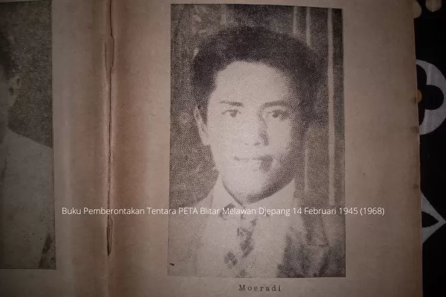
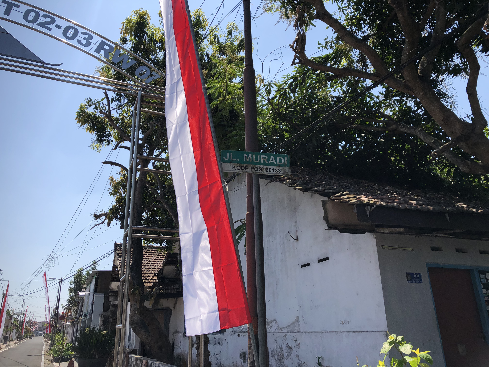

SEJARAH SHODANCO MURADI
Profil Shodanco Moeradi
Shodanco Muradi adalah salah satu pahlawan nasional Indonesia yang dikenal sebagai pemimpin pemberontakan Tentara Pembela Tanah Air (PETA) Daidan Blitar pada 14 Februari 1945. Sebagai komandan rombongan barat, Muradi memimpin sekitar 200 prajurit PETA dalam perlawanan terhadap pasukan Jepang. Rombongan barat ini dikenal sebagai pasukan PETA Daidan Blitar yang paling kuat, dengan sebagian besar anggotanya memiliki keterampilan militer yang baik dan persenjataan yang memadai.
Untuk mengetahui profil Shoedanco Moeradi lebih detail dapat kunjungi halaman blitarterkini.comDalam susunan organisasi perjuangan pasukan PETA Daidan Blitar melawan Jepang, Shodanco Muradi dipercaya sebagai komandan pertempuran. Di lapangan, usai pecahnya perjuangan melawan Jepang pada Rabu dini hari, 14 Februari 1945, Shodanco Muradi memimpin rombongan barat. Sehingga Muradi adalah komandan lapangan yang memimpin rombongan barat dalam pemberontakan PETA Blitar pada 14 Februari 1945.
Rombongan barat ini terdiri dari sekitar 200 prajurit dan dianggap yang paling kuat karena memiliki keterampilan militer dan persenjataan cukup. Sayangnya pemberontakan tersebut gagal, Muradi bersama enam tokoh lainnya dijatuhi hukuman mati oleh pengadilan militer Jepang. Eksekusi dilaksanakan pada 16 Mei 1945 di Ancol, Jakarta. Jenazahnya kini dimakamkan di Taman Makam Pahlawan Kalibata, Jakarta.
Kunjungi situs Tirto.id untuk membaca sejarah pemberontakan PETA di Blitar.Monumen PETA

Untuk mengenang sejarah pemberontakan PETA di Blitar pemerintah Kota Blitar membangun sebuah monumen PETA yang berlokasi di Jl Soedanco Soeprijadi. Monumen PETA di Blitar menampilkan tujuh pahlawan PETA, termasuk Muradi, Supriyadi, Suparjono, Halir, Ismangil, Sudarmo, Sunanto yang ikut mengibarkan bendera merah putih sebelum Proklamasi Kemerdekaan.
Selain itu pemerintah Kota Blitar juga melakukan pemutaran film sejarah yang diadakan di sekitar komplek Monumen PETA Kota Blitar untuk mengenang perjuangan para pahlawan PETA yang telah gugur. Kisah pemberontakan PETA Blitar ini menjadi simbol keberanian sebelum Indonesia merdeka, dihormati melalui monumen dan edukasi lokal seperti pemutaran film sejarah.
selengkapnya baca di vendoroutbond.comLokasi & Konteks Jalan Muradi
Jalan Muradi resmi dinamai untuk mengenang Shodanco Muradi, salah satu pemimpin pemberontakan PETA Daidan Blitar yang memimpin rombongan barat dalam perlawanan terhadap Jepang pada 14 Februari 1945. Penamaan ini merupakan bagian dari pelestarian ingatan terhadap tujuh pahlawan PETA Daidan Blitar yang nama dan jasanya diabadikan menjadi nama jalan di dalam Kota Blitar termasuk Supriyadi, Halir, Sunanto, Suparjono, Sudarmo, dan Ismangil.
Jalan Muradi terletak di perbatasan antara Kelurahan Bendogerit dan Kelurahan Sananwetan, Kecamatan Sananwetan, Kota Blitar. Jalan ini menghubungkan Jalan Sultan Agung dengan Jalan Shodanco Partoharjono, dan berada tepat di sebelah timur Istana Gebang serta di sisi selatan dari Jalan Shodanco Supriyadi, poros utama yang mengabadikan nama tokoh pahlawan PETA lainnya.
Ringkasan
| Aspek | Keterangan |
|---|---|
| Nama jalan | Jalan Muradi – mengabadikan Shodanco Muradi, komandan Rombongan Barat PETA Daidan Blitar |
| Lokasi | Kelurahan Bendogerit – Sananwetan, Kecamatan Sananwetan, Kota Blitar |
| Koneksi jalan | Menghubungkan Jalan Sultan Agung dan Jalan Shodanco Parthoarjono |
| Konteks historis | Salah satu rangkaian ruas jalan penghormatan kepada pahlawan PETA Blitar |